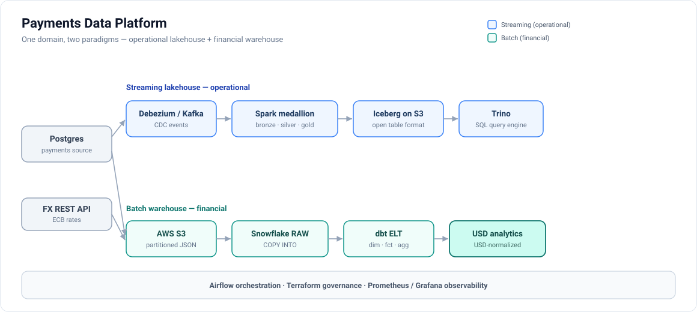
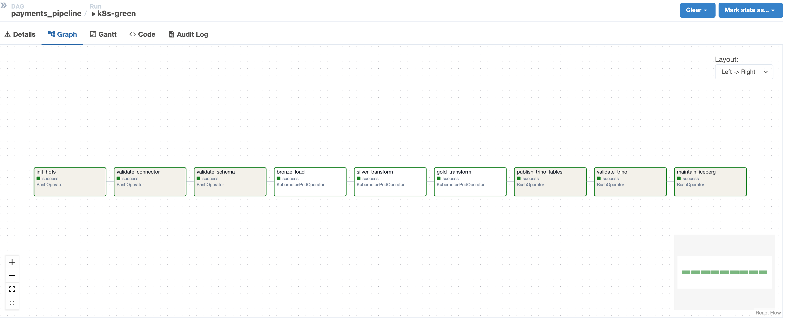
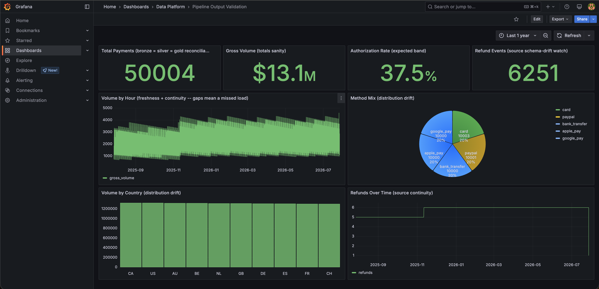
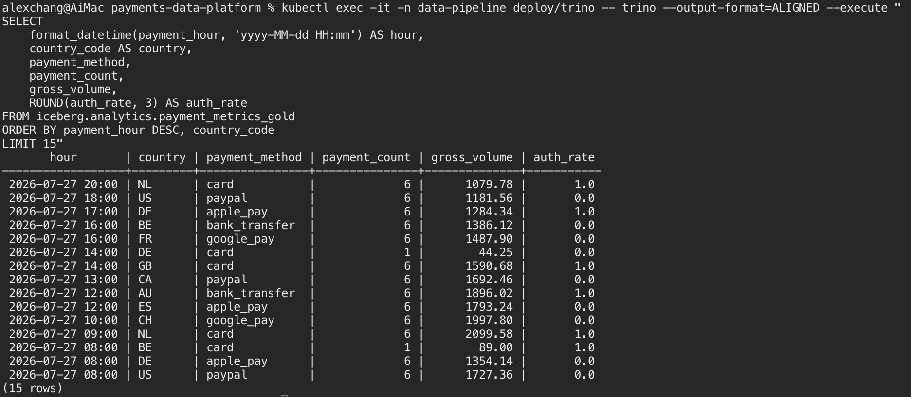

Architecture — two pipelines, two jobs, one API
A shared Postgres payments source feeds both tiers. The streaming lakehouse proves change-data-capture correctness: every insert, update, and delete replays safely into Iceberg through checkpointed Spark jobs. The batch warehouse proves analytical modeling: incremental extraction, raw VARIANT landing, and a tested dbt star schema. A serving API then closes the loop, handing the curated result back to applications.

The full platform: CDC lakehouse (top path) for hourly operational analytics, Snowflake ELT (bottom path) for monthly USD-normalized financials.

The warehouse tier: incremental watermark extraction → date-partitioned S3 staging → COPY INTO RAW → dbt staging/dims/fact/aggregate, with 12 data-quality gates.
Live: the dbt build in action
A real run against Snowflake — six star-schema models build and all twelve data-quality gates pass, ending in PASS=12 ERROR=0.

The ~1 TB scale story
The same dbt project, unchanged, was benchmarked against 4.2 billion synthetic payments (1.06 TB of logical JSON) generated server-side in Snowflake. All 12 gates passed, a 5M-row daily increment reconciled exactly — and the run surfaced a real bottleneck: staging materialized as a view re-runs its 4.4B-row dedup for every consumer. Flipping one configurable knob (DBT_STAGING_MATERIALIZED=table) pays the dedup once and cuts the conformed-dimension build 54×.

Full method, results, and stated limitations in the benchmark write-up.
The star schema
Kimball dimensional model: one row per payment in the fact, USD-normalized via an FX dimension that forward-fills weekend and holiday rate gaps; a conformed date dimension; tested grain and uniqueness. Explore it interactively in the hosted dbt lineage browser.

Serving the result — a read-only API over gold
The pipeline moves data inward: Postgres → CDC → Kafka → Spark → Iceberg → Trino. That gets an analyst to a SQL prompt, but nothing hands the result back to an application. A FastAPI tier closes that loop over the same gold Iceberg table.
# hourly metrics, filtered and cursor-paginated curl 'http://localhost:8000/v1/metrics/hourly?country_code=NL&limit=5' # roll-up totals for a window curl 'http://localhost:8000/v1/metrics/summary' → {"bucket_count":8764,"payment_count":50004, "gross_volume":"13123382.74","auth_rate":0.375, "snapshot_id":"1115647747148086969"}
Live against the Kubernetes cluster — the same 50,004 the Trino reconciliation reports.
Four decisions carry the design, and each has a reason worth defending:
- Filters compile to SQL, not Python. Gold is partitioned by
days(payment_hour), so a bounded range lets Iceberg prune files before anything is read. Measured: a filtered query is faster than an unfiltered one — 35 ms against 63 ms p50 — which is the pushdown working. - Keyset pagination, not
OFFSET.OFFSETmakes the engine produce and discard every skipped row, so page 500 costs five hundred pages of work. A cursor over(payment_hour, country_code, payment_method)costs the same on every page. - The cache is keyed on the Iceberg snapshot id, not a TTL. A TTL guesses. Every
INSERT OVERWRITEon gold commits a new snapshot, so keying entries on it makes invalidation exact — a response can never outlive the data it was built from, and never expires early while the data is unchanged. - Money crosses the wire as a string.
gross_volumeisDECIMAL(18,2); as a JSON number it would reach a browser as an IEEE double and reintroduce exactly the rounding the warehouse type exists to prevent.
The whole suite runs with no Trino driver installed and no warehouse reachable — the driver is imported lazily, so tests inject a fake connection underneath the real repository. Keeping trino out of CI is what proves that still holds.
The pipelines in action

Airflow — the CDC DAG: bronze → silver → gold with validation and alerting.

Grafana — pipeline-output validation: row counts, freshness, and authorization rate read from Iceberg gold through Trino. Grafana is for operating the platform; business analytics is served by the API.

Trino — federated SQL over the Iceberg lakehouse.

Snowflake — USD-normalized volume by currency from the star schema.
Stack
Kubernetes is the primary runtime — Airflow submits Spark work as pods, and both it and the Docker Compose inner loop generate their config from a single source, so the two cannot drift. The cloud tier is provisioned with Terraform, and CI runs 269 tests, lint, dbt compile, and Terraform validation on every push — with no warehouse, driver, or cluster required.